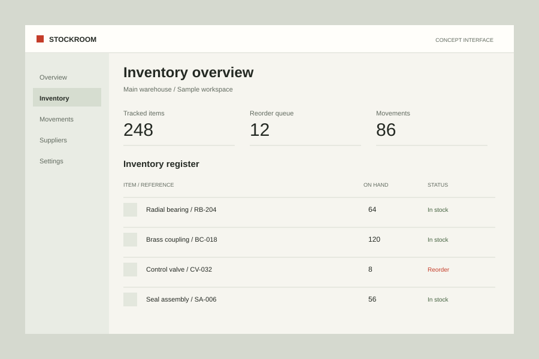

Inventory managementإدارة المخزون
A clearer view of stock, from the warehouse floor to the purchasing desk.رؤية أوضح للمخزون، من أرض المستودع إلى قرارات الشراء.
- Node.js
- PostgreSQL
- JavaScript
- REST API
Explore case studyاستكشف دراسة المشروع
The challengeالتحدّي
Stock records scattered across spreadsheets make it difficult to trace movements, reconcile quantities and identify what needs reordering.تشتّت سجلات المخزون بين الجداول يصعّب تتبّع الحركات ومطابقة الكميات وتحديد احتياجات إعادة الطلب.
The approachالحل المقترح
A proposed central inventory workspace with a movement ledger, warehouse filters, clear reorder states and role-based access. Every adjustment retains its context.مساحة عمل مقترحة توحّد المخزون، مع سجل للحركات وتصنيف حسب المستودع وحالات واضحة لإعادة الطلب وصلاحيات حسب الدور. يحتفظ كل تعديل بسياقه.
Responsibilitiesالمسؤوليات
Illustrative scope: requirements mapping, data modelling, API design, interface development and verification of stock movement rules.نطاق توضيحي: تحليل المتطلبات، ونمذجة البيانات، وتصميم واجهات البرمجة، وتطوير الواجهة، والتحقق من قواعد حركة المخزون.
Link to this studyرابط هذه الدراسة